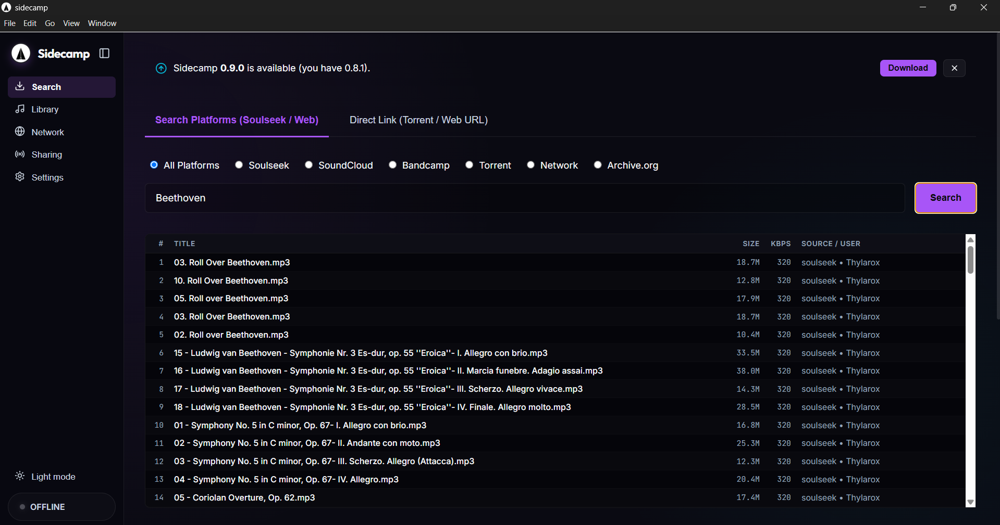

Download. Organize. Share.
Sidecamp is the desktop companion app for TuneCamp. Search and download music from Soulseek, torrents, and YouTube — then manage your local library, edit ID3 tags, play tracks in-app, and share your collection back to the network as a peer node.
Modern Desktop GUI Dashboard
A sleek, low-overhead graphical client for easy library management and P2P downloading.

Search: Search across Soulseek, SoundCloud, Bandcamp, Torrent, the TuneCamp network, and Internet Archive — all from one bar, all platforms at once or one at a time.
Key Features
Built for speed, convenience, and absolute user control.
Multi-Source Downloader
Search and download from Soulseek, BitTorrent/WebTorrent (magnet links), YouTube, SoundCloud, and Bandcamp via yt-dlp — all from one interface.
Local Library + Audio Player
Browse all your downloaded tracks in one place. Play any file with the built-in player, edit ID3 tags (title, artist, album), rename files, and organize them into folders.
Network Explorer
Browse tracks shared by TuneCamp peers and the server catalog. Download anything from the network with a single click and it lands straight in your library.
Upload to TuneCamp
Push tracks from your local library directly to your TuneCamp account. Metadata (title, artist, album) is pre-filled from saved ID3 tags — edit before upload in one click.
Peer Node
Run a lightweight daemon that connects outward to your TuneCamp server via WebSocket — no port forwarding. Listeners stream or download through the relay in real time.
Server Stays Clean
P2P downloads and yt-dlp run on your desktop, not the server. Your TuneCamp instance hosts only catalog and legitimate streaming data — fully compliant.
Internet Archive
Search and download free, public-domain audio directly from archive.org — no manual browsing required.
Graph Playlist & DJ Tools
Visualize your library as a track graph, auto-linked by BPM/key/genre. Mix with hot cues, a zoomable waveform, and EQ-based transitions (bass-swap, echo-out) for beat-synced blends.
Set Recording
Record your live mix session to a file as you play through the graph — capture the set exactly as you played it.
Peer Chat & Permissions
Message other peers directly by username, Soulseek-style. Allow or restrict downloads per shared folder, toggled in real time.
Shared Files Browser
Navigate your Downloads and shared folders, create subfolders, and move or delete files — one place to organize what you keep and share.
Quick Start Guide
Install
Download for your platform:
All releases: GitHub Releases
CLI daemon (headless peer node):
# Run peer node without GUI
npm run build
node dist-electron/main.js --daemonOr build from source:
git clone https://github.com/scobru/sidecamp.git
cd sidecamp
npm install
npm run dev # development mode
npm run build # build installerRequires Node.js 18+. yt-dlp is downloaded automatically on first use — no manual install needed.
Configure in the App
No config files needed. Open Sidecamp and go to the Configuration tab:
- → Paste your TuneCamp Server URL and API Token to enable uploads and Network Explorer.
- → Enter Soulseek credentials to enable P2P search.
- → Add shared folders for the Peer Node daemon.
Start Using
Use the Downloader tab to search and grab music, browse your collection in Library, or explore peers in Network. Start the Peer Node to share your library with the TuneCamp network.